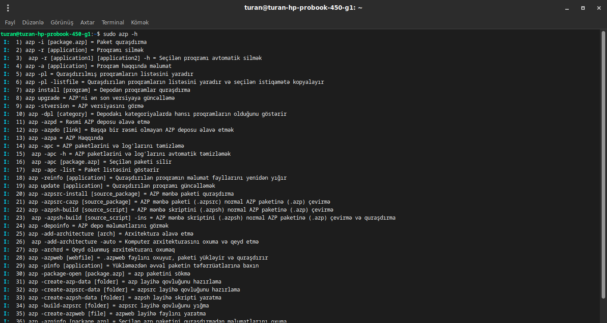
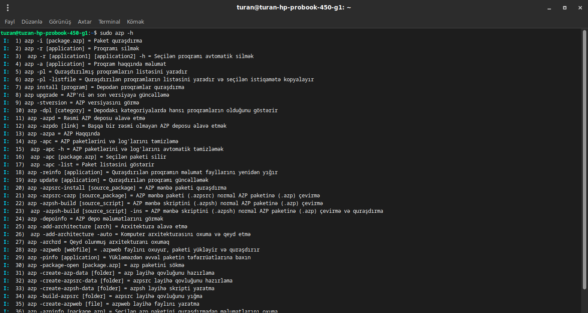
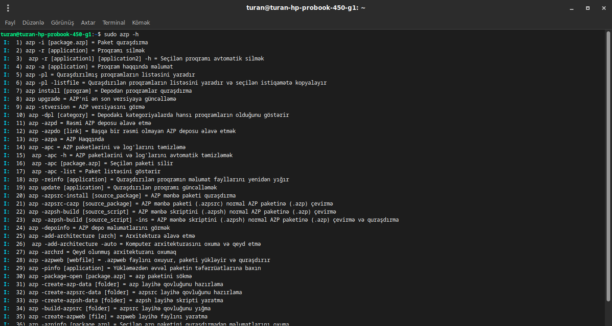

AZP, 'Bash Script' ilə yazılmış birçox funksiayalara sahib sürətli və güclü bir paket meneceridir.
Son versiyanı yükləyin:
AZP 5.0Nümunə ekran görüntüləri:
 


Azərbaycanın yerli Linux paket meneceri
AZP, 'Bash Script' ilə yazılmış birçox funksiayalara sahib sürətli və güclü bir paket meneceridir.
